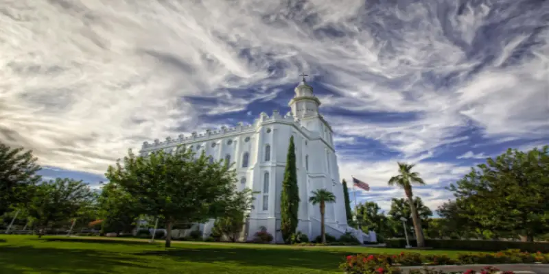

Temples to Visit
San Diego, California
Address:
7474 Charmant Dr
San Diego CA 92122-5000
United States
Telephone:
(1) 858-622-0991
Email:
sandiego@lds.org
Service:
No clothing rental available
No cafeteria available
History:
Apr 7, 1984 Temple Announced
Feb 27, 1988 Groundbreaking
Feb 20, 1993 Open House Start Date
Apr 3, 1993 Open House End Date
Apr 25, 1993 Dedication Date
Ordinance Schedule:
Tuesday–Friday 8:00 a.m.–8:00 p.m.
Saturday 7:00 a.m.–7:00 p.m.
Session Schedule:
Tuesday-Friday 8:00, 9:00, 9:30 a.m., then every hour from 10:00 a.m. to
6:00
p.m.;
Every 30 minutes from 6:30 to 7:30 p.m.;
Additional sessions: Tuesday, 5:30 a.m. (English) and Friday, 8:00 p.m.
(Spanish)
Saturday Every 30 minutes from 7:30 to 9:30 a.m., from 10:30 to 11:30 a.m.,
and 12:30 p.m.; Every hour from 1:00 to 6:00 p.m.; 6:30, 7:00 p.m.
Temple Closure Schedule:
Summary:
Currently:
High:
Humidity: %
Wind Speed: mph
Paris, France
Address:
46, Boulevard Saint Antoine
78150 Le Chesnay
France
Telephone:
+33 (0)9 70 73 70 00
Email:
paris-off@ldschurch.org
Service:
No cafeteria service
No clothing service
History:
Oct 1, 2011 Temple Announced, Groundbreaking, Open House, Start DateOpen House, End Date
May 21, 2017 Dedication Date
Ordinance Schedule:
Tuesday–Thursday 10:00, 10:45 a.m.; 12:30, 1:15, 3:00, 3:45, 5:30, 6:15 p.m.
Friday 10:00, 10:45 a.m.; 12:30, 1:15, 3:00, 3:45, 5:30, 7:30 p.m.
Saturday 8:30, 9:15, 11:00, 11:45 a.m.; 1:30, 2:15 p.m.
Session Schedule:
Tuesday–Thursday 10:00 a.m.; 12:30, 3:00, 5:30 p.m.
Friday 7:00 p.m.
Saturday 8:30, 11:00 a.m.; 1:30 p.m.
Temple Closure Schedule:
Summary:
Currently:
High:
Humidity: %
Wind Speed: mph
Sao Paulo, Brazil

Address:
Av. Professor Francisco Morato,
2390
Caxingui - Sao Paulo - SP
CEP 05512-900
Brazil
Telephone:
(55) 11-3723-7600
Email:
saopaulo@lds.org
Service:
Cafeteria service available
Clothing service available
History:
Mar 1, 1975 Temple Announced Mar 20, 1976 Groundbreaking Oct 30, 1978 Open House Start Date Oct 30, 1978 Open House End Date Oct 30, 1978 Dedication Date Feb 22, 2004 Rededication
Ordinance Schedule:
Tuesday–Thursday 9:00 a.m.–9:00 p.m.
Friday 9:00 a.m.–4:00 p.m.
Saturday 7:0 0a.m.–2:00 p.m.
Session Schedule:
Tuesday–Friday 9:00, 10:30 a.m.; 12:00 noon, 3:30, 5:45, 7:45, 8:15 p.m.
Saturday 7:00, 8:00, 9:30, 10:30 a.m.; 12:00 noon; 1:00, 2:30, 3:30 p.m.
Temple Closure Schedule:
Summary:
Currently:
High:
Humidity: %
Wind Speed: mph
St. George, Utah
Address:
250 East 400 South
St. George, UT 84770-3699
United States of America
Telephone:
(1) 435-673-3533
Email:
stgeorge@lds.org
Service:
Cafeteria service available
Clothing service available
Guest housing available
History:
Nov 9, 1871 Temple Announced Nov 9, 1871 Groundbreaking Apr 6, 1877 Open House Start Date Apr 6, 1877 Open House End Date Apr 6, 1877 Dedication Date Nov 11, 1975 Rededication
Ordinance Schedule:
Monday 6:00–11:30 a.m.
Tuesday and Thursday 6:00 a.m.–7:30 p.m.
Wednesday and Friday 6:00 a.m.–8:30 p.m.
Saturday 6:00 a.m.–5:30 p.m.
Session Schedule:
Monday 7:20, 8:00, 8:40, 9:20, 10:00, 10:40, 11:20 a.m.
Tuesday–Saturday Every 40 minutes from 7:20 a.m. to 8:00 p.m.
Temple Closure Schedule:
Summary:
Currently:
High:
Humidity: %
Wind Speed: mph